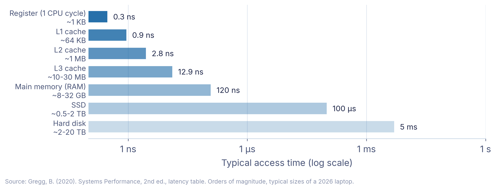
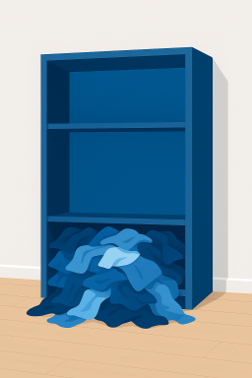
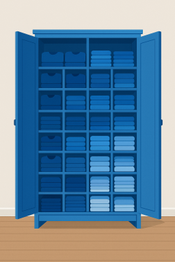
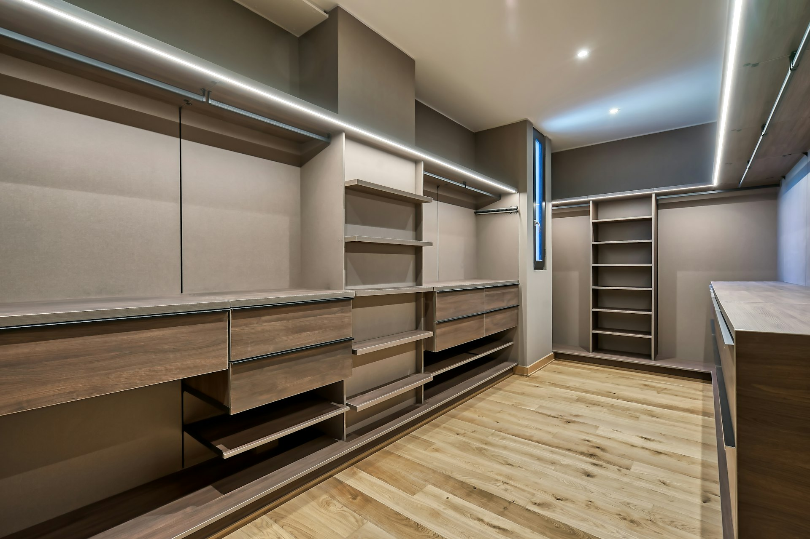
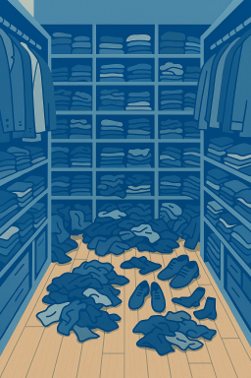

Lecture III: Caching
Programming: Everyday Decision-Making Algorithms
Today in one sentence
When space is limited, keep close what you are likely to need next, and the best guide to that is what you used most recently.
Why it matters
Your cupboard is full, your desk is cluttered, your inbox overflows. Companies have the same problem: which goods sit next to the loading dock, which files stay on the fast server, which tasks get your attention today.
Roadmap
- The problem: limited space, too much stuff
- The solution: keep what you need close, clear out the rest
- Your mind is a cache: protecting your attention
The problem: limited space, too much stuff
A quick question first
Question: How many of you have a messy desktop right now? Raise your hand!
Today’s lecture will explain why that matters more than you think…
Notes
Learning objectives: explain the fundamental concepts of caching and its importance; compare different cache replacement strategies; identify caching principles in everyday life; apply caching concepts to personal productivity; understand the relationship between caching and attention management.
An everyday problem: the cupboard is full
- We have a problem: Our cupboard.
- It’s time to put things in order.

Organize better, or clear out?
Question: What could we do?
- Better organization
- Clearing out things we no longer need
- Now we have two problems:
- Storing?
- Clearing out?

Two ways out: better organization or more space
- Better Organization:
- Subdivide storage
- Efficient sorting
- More Space:
- Increase capacity
- Question: Which approach is better?
Even the best organization has limits
- Organization helps, but takes time.
- More space helps, but has limits.
- Every storage has a finite capacity.
When storage is full, we could buy more
Question: What do we do when the storage is full?

We could increase the capacity
But more space is costly and slow
- Increasing capacity costs money
- Trade-off: size vs. speed, larger is slower to search
- Sooner or later it still fills up

Every storage has this problem
Question: What else faces this problem?
- Cupboards
- Computers
- Email inbox
- Smartphones
- Warehouses
- Our brain?!
Full storage slows everything down
Question: What is the impact of full storage?
- Access speed drops
- Processing time up
- Performance down
So we have to clear out, but what goes?
- True for cupboards, computers, brains…
- But what stays and what goes?
Computers hit the same wall
- 1946: von Neumann’s team expects a hierarchy of memories1
- Processors got faster much quicker than memory (Moore’s Law, 1965)
- 1965: Maurice Wilkes proposes a small, fast memory, the first cache
- 1995: Wulf and McKee call the growing gap the Memory Wall
Notes
The evolution of computer memory: computer science faced the same storage problem as our cupboard. Processors became faster much more quickly than memory, so a small, fast memory close to the processor (Wilkes called it a “slave memory”) became necessary.
A fast processor waiting for slow memory
- Modern CPUs: billions of operations per second
- Problem: data doesn’t arrive fast enough
- Question: What’s the point of a fast CPU that waits for slow memory?
→ The Von Neumann bottleneck2
The problem: limited space, too much stuff
What we covered
Every storage system faces the same question: what to keep close and what to clear out.
The solution: keep what you need close, clear out the rest
Roadmap
- The problem: limited space, too much stuff
- The solution: keep what you need close, clear out the rest
- Your mind is a cache: protecting your attention
The cache: a hierarchy of memories
A hierarchical memory system
- L1 Cache: Tiny but ultra-fast (kilobytes)
- L2/L3 Cache: Larger, still fast (megabytes)
- RAM: Main workspace (gigabytes)
- Storage: Huge but slow (terabytes)
Like a library…
Like a library: closer is faster and smaller
- Library storage (millions of books, mass storage)
- Subject shelves (thousands of books, RAM)
- Your desk (a few borrowed books, L2)
- Short-term memory (current page, L1)
Closer = Faster = Smaller
Fast memory is small, big memory is slow
A register is roughly ten million times faster than a hard disk. Question: Why not make everything that fast?
Why not make everything fast?
- Physics: larger memory sits further away, signals take longer, fast memory gets hot
- Money: per gigabyte, cache memory costs many times more than a hard disk
- Solution: several levels, each optimized for its job
Notes
Physical limits: larger memory sits further from the CPU, signals take longer to travel, and dense fast memory produces heat that must be dissipated. Economic limits: per gigabyte, fast cache memory costs many orders of magnitude more than a hard disk. The solution is a hierarchy with multiple cache levels, each optimized for different needs.
Small and fast means clearing out regularly
- L1 and L2 cache only contain most necessary data.
- The same should apply to your desk.
- Therefore, both must be cleared regularly.
Four ways to decide what goes
Question: Which eviction strategies can you think of?
- Random
- First-In, First-Out (FIFO)
- Least Frequently Used (LFU)
- Least Recently Used (LRU)
The perfect strategy needs a crystal ball
- Optimal: Clairvoyance
- Keep what you’ll need
- Remove what you won’t
- Question: What’s the problem?
→ Requires knowledge of the future!
In practice: throw out what you used longest ago
- Least Recently Used (LRU) is the dominant strategy
- When space is needed, evict the item that was not used for the longest time
- On average much better than, for example, random eviction
- Question: Why is this the better strategy?
LRU works because the recent past predicts the near future
- Temporal locality: what you used recently, you will likely need again soon
- Books on your desk, apps opened today, people texted this morning
- In Belady’s classic comparison, LRU came closest to the crystal ball3
Marie Kondo is LRU for your home
- Let go of unused things → LRU principle
- Keep things where used → Spatial locality
- Result: Significant productivity increase
Marie Kondo = LRU for physical objects!
Spatial locality: keep things where you use them
Question: Can you think of examples where spatial locality is applied in your daily life?
Mathematically optimal
The solution: keep what you need close, clear out the rest
What we covered
Fast storage is always small, so we need a rule for clearing out. Least Recently Used works because the recent past predicts the near future.
Your mind is a cache: protecting your attention
Roadmap
- The problem: limited space, too much stuff
- The solution: keep what you need close, clear out the rest
- Your mind is a cache: protecting your attention
Our brains are caches
- Why does this matter for humans?
- Your brain works like a cache: limited capacity for active information
- Fast access to what you used recently
- It constantly decides what to keep and what to forget
Caches can be flooded and poisoned
- Cache flooding: overload the cache, so important data gets evicted and everything slows down
- Cache poisoning: plant false data, so later requests get wrong answers
- Both exploit that a cache is small and trusted without checking
Notes
Cache flooding is a form of Denial-of-Service attack: the system is overloaded with requests, important data is evicted, the system slows down or crashes. Cache poisoning plants false data in a cache, so later requests are answered with wrong content; DNS cache poisoning, for example, sends users to a fake website. Both exploit that a cache is small and is trusted without checking the original source.
Five productivity killers
- Overload: too much information at once
- Exhaustion: too long without clearing out
- Context switching: often 20+ minutes to get back on track4
- Distraction: cache flooding by notifications and social media
- Misinformation: cache poisoning by fake news
Notes
Overload: too much information, the cache capacity is exceeded. Exhaustion: too long without “cache clearing”. Context switching: every interruption of flow costs often 20 minutes or more to get back on track. Distraction is cache flooding by constant notifications and social media. Misinformation is cache poisoning by fake news and misleading information.
Your attention is under attack
- Technology and social media are designed to capture attention (cache flooding)
- Constant interruptions: every notification is a forced eviction
- Result: less creativity, critical thinking and productivity
Reflection: How many times did you check your phone during this lecture?
Manage your mental cache
- Limit screen time and practice “monotasking”
- Prioritize sleep, nutrition and mindful habits
- Create protected time for deep work
- Be selective about what enters your attention
Notes
In cache terms: monotasking reduces cache thrashing, sleep and nutrition maintain cache performance, protected time for deep work prevents cache flooding, and being selective is smart cache management.
Distraction can’t be avoided, but it can be reduced
- Distraction is everywhere, especially for managers
- Awareness is the first step to keep your brain working well
- Want to dive deeper? Read “Stolen Focus” by Johann Hari
Notes
Distraction can hardly be avoided in today’s world, but it can be mitigated. This is particularly important for managers. This part of the lecture is designed to raise your awareness of what you can do to keep your brain working efficiently.
Three levels of attention: spotlight, starlight, daylight
- Spotlight: what you work on right now (your L1 cache)
- Starlight: your goals for this week or month (your L2 cache)
- Daylight: your long-term values and direction (your storage)
Notes
The three levels come from Johann Hari’s “Stolen Focus”. Spotlight: immediate goals, your focus, what are you working on right now? Starlight: medium-term goals, your wishes, what matters this week or month? Daylight: long-term goals, your values, what defines your life direction?
Five practical strategies
- Prioritize: what deserves a place in your mental cache?
- Time-box: structure prevents overflow
- Take breaks: regular clearing out prevents exhaustion
- Enable flow: dedicated workspace, fewer notifications
- Meditation and exercise: maintenance for your cache
Notes
Prioritization: what deserves to be in your mental cache? Structure and schedule: time-boxing prevents cache overflow. Breaks: regular cache clearing prevents exhaustion. Enable flow: dedicated workspace, manage notifications, clear communication. Meditation and exercise: maintenance routines for optimal cache performance.
Your desk as a cache hierarchy
- Hot cache (on your desk): only today’s tasks
- Warm cache (nearby shelf or drawer): this week’s projects
- Cold storage (archive or closet): everything else
Key principle: if you haven’t used it recently, move it away!
Self-assessment
Question: Right now:
- How many browser tabs do you have open? ___
- How many notifications did you receive in the last hour? ___
- How many unread emails in your inbox? ___
Do you see any risks of cache flooding?
Your mind is a cache: protecting your attention
What we covered
Your attention works like a cache: small, valuable and easily flooded, so protect it.
What we covered
The problem: limited space, too much stuff
Every storage system faces the same question: what to keep close and what to clear out.
The solution: keep what you need close, clear out the rest
Fast storage is always small, so we need a rule for clearing out. Least Recently Used works because the recent past predicts the near future.
Your mind is a cache: protecting your attention
Your attention works like a cache: small, valuable and easily flooded, so protect it.
Why it matters
Your cupboard is full, your desk is cluttered, your inbox overflows. Companies have the same problem: which goods sit next to the loading dock, which files stay on the fast server, which tasks get your attention today.
Literature
Interesting literature to start
- Christian, B., & Griffiths, T. (2016). Algorithms to live by: the computer science of human decisions. First international edition. New York, Henry Holt and Company.5
Books on Programming
- Downey, A. B. (2024). Think Python: How to think like a computer scientist (Third edition). O’Reilly. Free online
- Elter, S. (2021). Schrödinger programmiert Python: Das etwas andere Fachbuch (1. Auflage). Rheinwerk Verlag.
Think Python is free online and a great start. Schrödinger programmiert Python is a playful alternative in German.
More Literature
For more interesting literature, take a look at the literature list of this course.
Footnotes
Burks, A. W., Goldstine, H. H., & von Neumann, J. (1946). Preliminary discussion of the logical design of an electronic computing instrument. Wilkes, M. V. (1965). Slave memories and dynamic storage allocation. Wulf, W. A., & McKee, S. A. (1995). Hitting the memory wall. See also Christian & Griffiths (2016), ch. 4.↩︎
Term coined by John Backus (1977).↩︎
Belady, L. A. (1966). A study of replacement algorithms for a virtual-storage computer. IBM Systems Journal, 5(2), 78–101; see also Christian & Griffiths (2016), ch. 4. In Tutorial III.III you measure LRU against random eviction yourself.↩︎
Order of magnitude from Gloria Mark’s workplace studies, e.g. Mark, G., Gonzalez, V. M., & Harris, J. (2005). No task left behind? Examining the nature of fragmented work. CHI 2005.↩︎
The main inspiration for this lecture. We have read it and discussed it in depth, always wanting to translate it into a course.↩︎